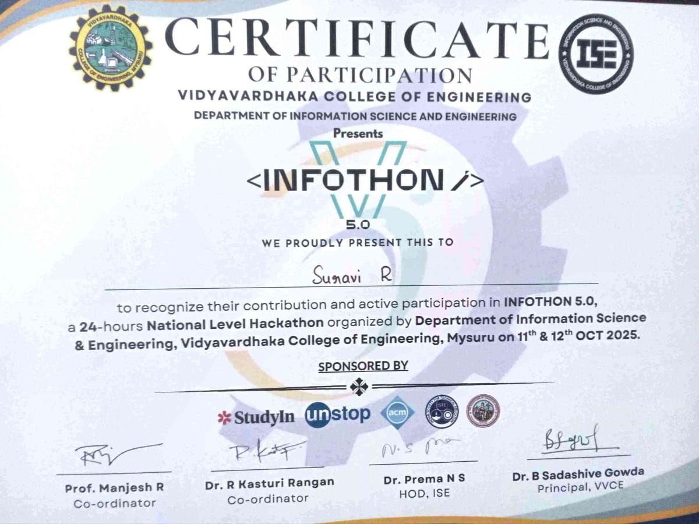
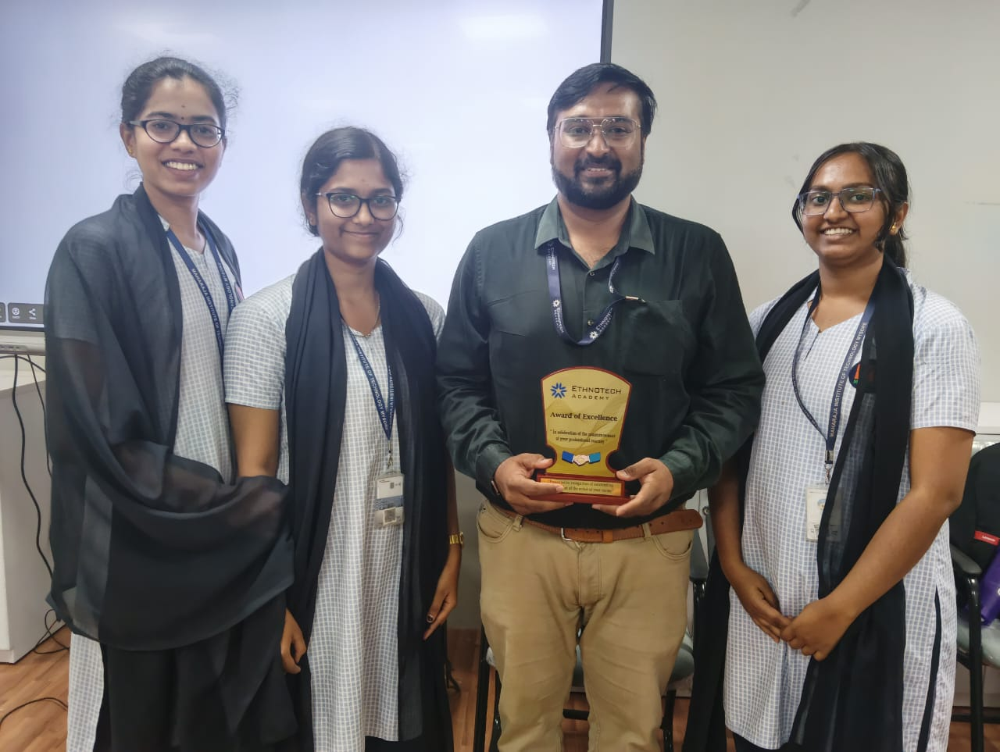

HerbAura – Virtual Ayurvedic Knowledge Platform
An immersive 3D digital garden built with Three.js and Python AI that modernizes ancient Ayurvedic botanical wisdom into interactive plant exploration, AI Khashayam recipe scoring, and quizzes.
Project Architecture & Briefing
01. Concept & Vision
Traditional Ayurvedic texts are often dense and static. HerbAura brings ancient wellness knowledge to life through interactive 3D WebGL models, gamified botanical quizzes, and AI assistance for all age groups.
02. Three.js & AI Engine
Features an explorable 3D WebGL garden where users inspect botanical plant structures. Includes an intelligent AI Khashayam Maker that analyzes herbal combinations and scores remedy efficacy.
03. Hackathon Recognition
Built as a complete full-stack web application during the 24-Hour VEC Hackathon. Recognized by judges for rapid prototyping, fluid 3D execution, and innovative health education concept.
Interactive Slide Presentation
View the slide presentation explaining the WebGL render pipeline, AI recipe engine, and hackathon presentation deck.
Platform Screenshots & Video Preview

VEC Hackathon Showcase

Interactive 3D Garden Canvas